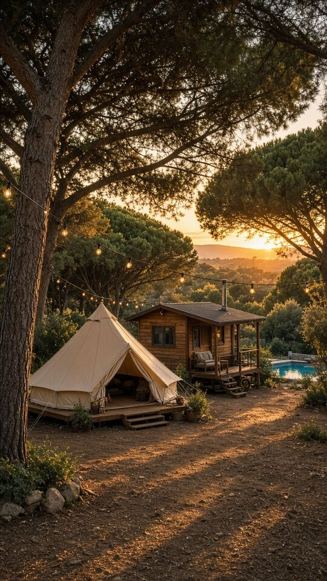

La plage comme contexte
La station compte près de neuf kilomètres de sable fin. Votre reel peut évoquer le littoral, sans faire croire à un accès direct ou à une distance piétonne depuis le camping non confirmée.
Canet-en-Roussillon · Campings
La plage donne une envie de départ, mais les voyageurs veulent aussi voir où ils vont séjourner. À Canet-en-Roussillon, votre camping peut présenter ses emplacements et ses hébergements avec davantage de clarté. Rushless assemble vos vidéos, photos et contenus en un reel qui suit le regard et répond aux premières questions. Chaque image vient de votre univers, sans ajouter de prestations pour remplir la vidéo.

Vos vidéos, photos et contenus existants. Rien à tourner pour commencer.
Motion design sur mesure · Format vertical 9:16
Pensés pour le scroll.
Prêts pour vos réseaux.
Le bon lieu. Le bon moment.
Canet combine une forte saison estivale et des repères variés. Votre contenu peut choisir l'un de ces angles, puis revenir aux conditions concrètes de séjour et à la situation exacte de votre établissement.
La station compte près de neuf kilomètres de sable fin. Votre reel peut évoquer le littoral, sans faire croire à un accès direct ou à une distance piétonne depuis le camping non confirmée.
Le port de plaisance et Oniria sont des repères locaux. Ils situent une idée de séjour, mais ne deviennent ni une sortie comprise ni des partenaires de votre établissement.
L'étang de Canet–Saint-Nazaire et ses cabanes de pêcheurs offrent un autre angle de territoire. Nous n'annonçons pas d'observation accompagnée ou d'accès depuis le camping sans information de votre part.
Présenter les catégories et les espaces avant le pic estival peut aider à préparer les échanges. Les dates d'ouverture et les disponibilités restent celles de votre propre calendrier de réservation.
Ce qu'on peut faire bouger pour vous
Un aperçu clair de ce que l'on vient chercher.
Vos photos montrent les abords et la disposition réelle. Les informations confirmées accompagnent les images, sans promettre une ombre permanente ou une tranquillité absolue que le visuel ne permet pas de garantir.
Un parcours de photos peut relier terrasse, séjour et couchages. Nous identifions le modèle présenté et gardons ses équipements distincts des options ou des prestations d'une autre catégorie.
Si vos médias les présentent, un reel peut montrer les lieux de rencontre ou de service. Les horaires et les périodes d'accès sont vérifiés avec vous avant d'apparaître à l'écran.
La dernière séquence invite à consulter votre site ou à vous écrire. Le contenu donne un premier aperçu du camping sans remplacer les informations pratiques nécessaires pour organiser le séjour.
Le mouvement change la lecture.
Cette image de camping générée par IA sert d'aperçu de composition ; elle ne désigne aucun établissement de Canet. La tente et les hébergements ne sont pas une offre de séjour. Un exemple de reel adapté à votre niche sera disponible prochainement. Pour votre publication, nous utiliserons vos vidéos, images et contenus d'accueil, sans emprunter au décor illustré des prestations absentes de votre camping.
Aperçu du format · Exemple de reel de votre niche bientôt disponible.
Et si c'était votre marque ?Simple pour vous. Précis pour nous.
Vos vidéos, photos, captures d’écran, produits, menus ou annonces. On compose avec les contenus que votre entreprise possède déjà.
Vous découvrez un premier reel à votre image. Un exemple concret pour juger le ton, le rythme et la lisibilité.
Nous ajustons les contenus avec vous. Les formats verticaux 9:16 sont livrés prêts pour vos réseaux.
Deux façons de travailler
Clés en main
Nous montons vos vidéos, photos et contenus existants : site, réseaux, annonces, produits, menus ou captures d’écran.
Signature
Vos vidéos, photos et autres médias enrichissent le récit. Le clone de votre voix est possible uniquement avec votre consentement explicite préalable.
Du motion design sur mesure, des textes toujours lisibles et chaque reel vérifié par un humain. Les générateurs automatiques ne décident pas de votre message. Rushless est une agence vidéo basée à Ille-sur-Têt, pour des clients partout en France. Les échanges et les livraisons se font à distance.
On vous répond.
Campings · Canet-en-Roussillon
Un sujet consacré au cadre de Canet peut évoquer ces deux paysages. Nous les distinguons de la visite du camping, sans suggérer qu'ils se trouvent tous les deux à sa porte. Les accès précis demandent des renseignements confirmés depuis votre adresse.
Nous choisissons un modèle à la fois ou une sélection clairement identifiée. Une cuisine ne doit pas être associée aux chambres d'un autre hébergement comme s'il s'agissait du même ensemble. Les photographies et les légendes sont relues avec vous pour éviter cette confusion.
Le reel peut faire découvrir votre camping et inviter à consulter le calendrier en ligne. Aucune période libre n'est nécessaire pour construire ce sujet. Vous gardez la maîtrise de l'information de réservation, qui peut évoluer après la publication du contenu.
Le plus simple, c'est de voir.
Partagez votre galerie de camping à Canet et l'hébergement à faire découvrir en premier. Nous organisons ses images dans une invitation courte et fidèle.